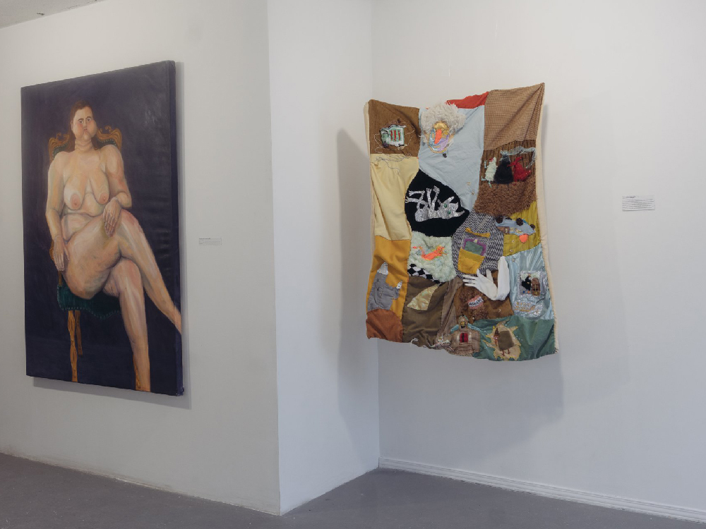
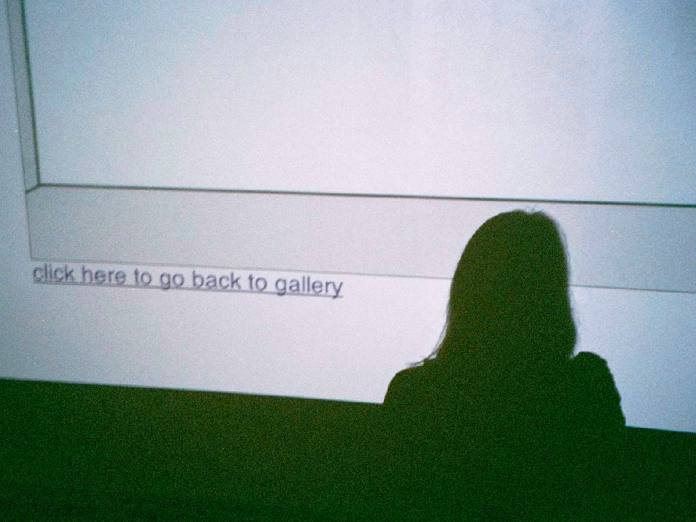
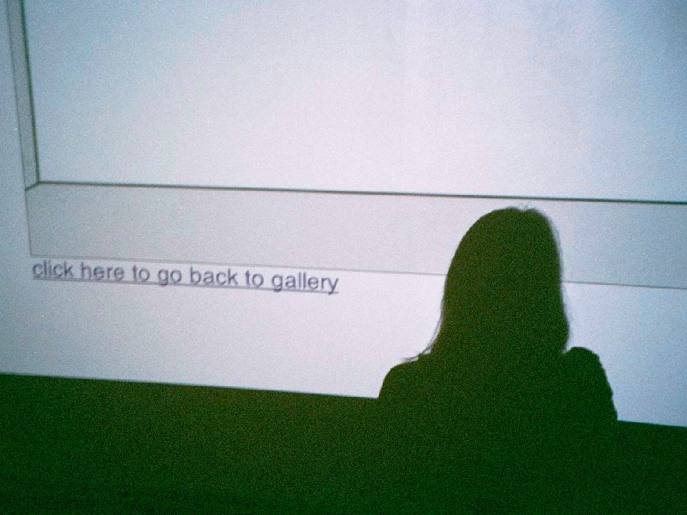
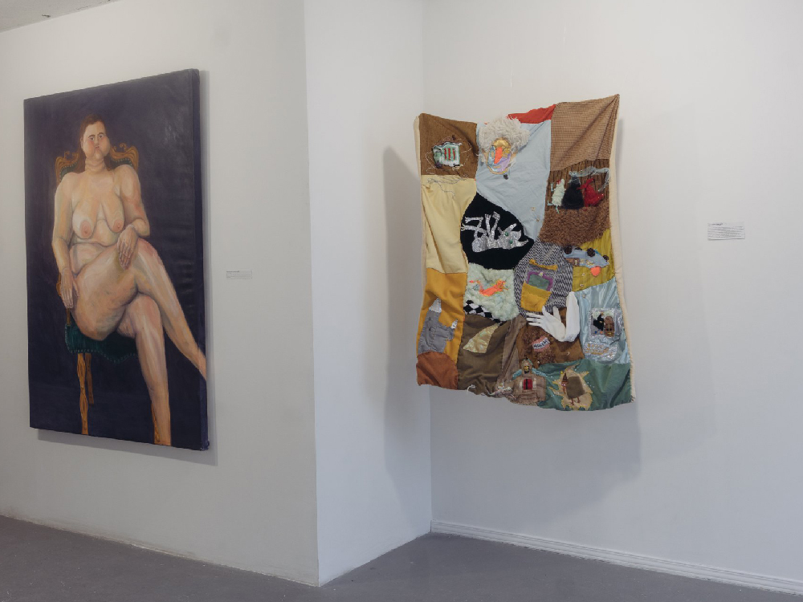
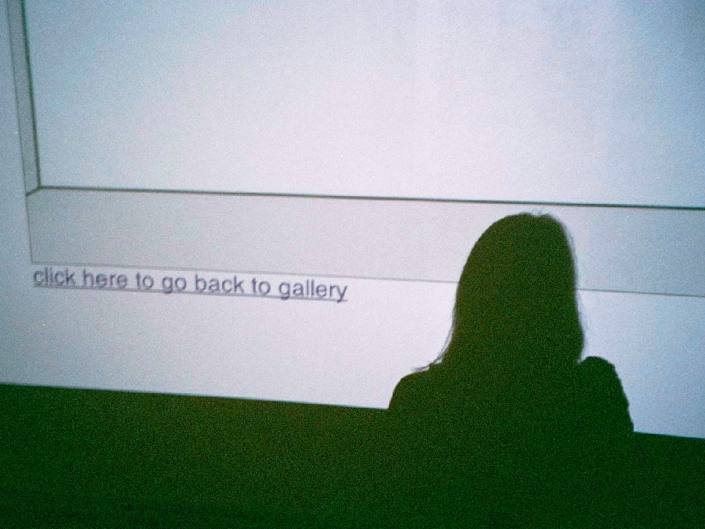

|

 



|
Fondé en 2000, Art Matters est souvent perçu tel plus grand festival d’art géré par des étudiant.es en Amérique du Nord.
Annuellement, le festival dure 3 semaines et met de l’avant environ 10 expositions organisées par et pour les étudiant.es du premier cycle.
Nous apprécions les nouvelles idées et fréquemment, collaborons avec des festivals et des organismes professionnelsafin de faciliter le mentorat et de créer de futures opportunités de commissariat.
Art Matters est à but non lucratif dont l’initiative demeure dans la rémunération de ses collaborateur.ices. Notre but est d’amener les gens à travailler ensemble, encourageant ainsi les étudiant.es dedifférentes pratiques artistiques
|
|


|
María Escalona est actuellement dans sa quatrième, et dernière, année dans la majeure Fibres and Material Practices. Née à Caracas, Venezuela, elle a immigré au Canada à l’âge de 19 ans pour étudier les arts. Son œuvre s'enracine dans ses origines vénézuéliennes et s’inspire de son présent canadien et croise des notions visuelles, linguistiques, textiles et imprimées. Ses œuvres, essais et articles ont été présentés à la galerie VAV, The Concordian, le collectif feministe Soy Nosotras et Bidgala, une communauté artistique virtuelle où elle est directrice du contenu éditorial.
Matt J Sanderson est un étudiant de quatrième année dans la majeure Studio Arts and Art History à Concordia. Il est originaire du territoire non cédé de la nation algonquine Anishinaabe (Ottawa). Sa pratique comprend la peinture, le dessin, la photographie, l’écriture et la conservation. Son travail est de nature collaborative, exploratoire et méditative. Travaillant en série, il vise à utiliser les images comme moyen de narration. De cette façon, il navigue sur les thèmes de l’identité queer, de la mémoire et de la famille. Overall, his work reflects a consideration of art as a means of building empathy and interconnectivity.
Emily Blair est une étudiante de quatrième année à Concordia dans la majeure Fibres and Material Practices. Originellement des terres non cédées des Wolastoqiyik dans la Confédération Wabanaki (Nouveau Brunswick), le travail d’Emily se concentre sur la collecte de données sur l’environnement et sa réinterprétation dans des tissages. Grâce à des collaborations avec le son et la vidéo, Emily produit des installations tissées qui parlent de liens avec la terre et nos environnements personnels.